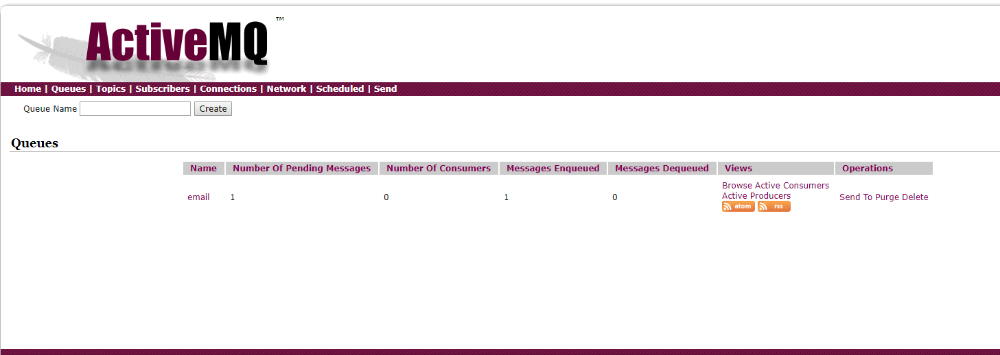

ActiveMq安装以及使用php第三方stomp来操作ActiveMQ
消息队列
在互联网项目开发者经常会遇到『给用户群发短信』、『订单系统有大量的日志需要记录』或者在秒杀业务的时候服务器无法承受瞬间并发的压力。
这种情况下，我们怎么保证系统正常有效的运行呢？
这个时候，我们可以引入一个叫『消息队列』的概念来解决上面的需求。
概念
在高并发的时候，程序往往无法做到及时的处理。我们引入一个中间的系统，来进行分流和减压。
所以从本质上讲：消息队列就是一个队列结构的中间件。也就是说，你把消息和内容放入这个容器之后就可以直接返回，不用等它后期处理的结果。另外会有一个程序，读取这些数据并按照顺序处理。
- 队列结构的中间件
- 消息放入后，不必立即处理
- 由订阅者/消费者按顺序处理
使用场景
当遇到一个比较大或者耗时比较长的环节的时候，而同时你的业务又不需要立即知道这个环节的结果，使用消息队列是好的选择。
一、数据需要冗余的时候
比如订单系统中，后续需要进行数据的转换和记录。消息队列可以把这些数据持久化的存储在队列中，然后由订单后期处理程序进行处理，处理完成之后再把这条记录从队列中删除。二、系统的解耦
消息队列解决了2套系统之间深度耦合的问题。
使用消息队列后，入队的系统和出队的系统没有直接的关系。
入队系统和出队系统，其中一个崩溃之后不会影响另外一个的正常运行。三、流量削峰
就是秒杀和抢购的时候，会出现明显的流量剧增，对服务器的压力非常大。
实际项目开发中，配合缓存来使用消息队列，一种很好的方案。四、异步通信
消息队列本身就实现了程序的异步操作，因此只要适合于异步的场景都可以使用消息队列五、扩展性
比如订单系统，订单入队之后，后期或许还有财务系统处理，但是如果还要加一个配货系统。
只需要让这个配货系统 订阅这个 消息队列 即可。六、排序保证
在有些场景下，数据的处理顺序是非常重要的，队列本身就可以做成单线程的单进单出的系统。
从而有效的保证数据按照顺序进行处理。
常见实现队列介质的优缺点
- Mysql：可靠性高、易实现、速度慢
- Redis：速度快，单条大消息包时效率低
- 消息系统：专业性强、可靠，学习成本高(比如：RabbtiMQ)
消息处理的触发机制：
死循环方式读取：易实现，故障时无法及时恢复；
定时任务：压力均分，有处理量上限。(最大的缺陷：定位任务时间的间隔和处理的数据需要精准把握，不能上一个任务还没有处理完成，下一个认为就已经启动了)
守护进程：类似于PHP-FPM和PHP-CGI，需要shell知识
那么，对于消息队列，我们现在就来学习ActiveMQ的使用。
ActiveMQ环境部署
下载
下载地址：http://activemq.apache.org/activemq-5143-release.html
下载apache-activemq-5.14.3-bin.tar.gz
安装
- 解压apache-activemq-5.14.3-bin.tar.gz
tar -zxvf apache-activemq-5.14.3-bin.tar.gz - 进入
cd apache-activemq-5.14.3/bin 启动activemq
./activemq start访问
ActiveMQ自带了一个web服务器(jetty，是java开发的)，如果不了解没有关系，我们先学会怎么使用即可
访问这个web服务器:
- 后台
http://127.0.01:8161/admin
用户名：admin
密码：admin
PHP中使用ActiveMQ实现消息队列
用PHP来操作ActiveMQ，我们可以借助一个第三方扩展。
下载:
1 | >composer require fusesource/stomp-php:2.0.* |
发送消息给队列
1 |
|
发送成功，我们可以在后台看到消息队列名字

上面的代码到这里，还不够完美。如果我们服务器重启了activemq，没有处理的消息会丢失。
这个时候我们需要用到send()方法的第三个参数。
//消息持久化 persistent为true，字符串的’true’
$result = $connect->send(‘email’,json_encode($data),array(‘persistent’=>’true’));
订阅（监听队列消息），并将完成的消息队列出列
1 |
|